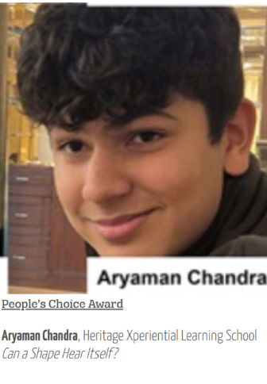

People’s Choice Award
311student participants
13disciplinary categories
1People’s Choice Award
For Can a Shape Hear Itself?, a landscape-functions project developed with IIT Delhi mentorship. Fellow participants in Sigma Xi’s Student Research Showcase selected this work for the People’s Choice Award.
Read Sigma Xi’s press release ↗See the project and presentation ↗